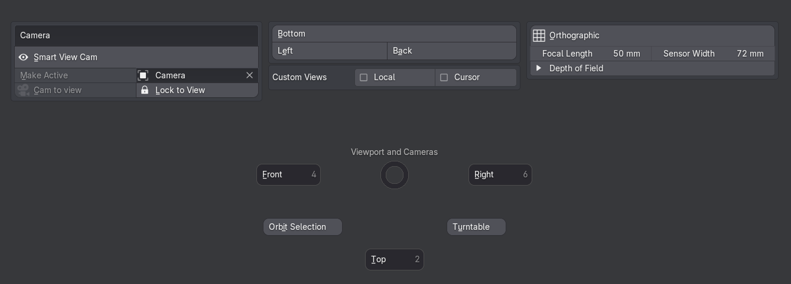
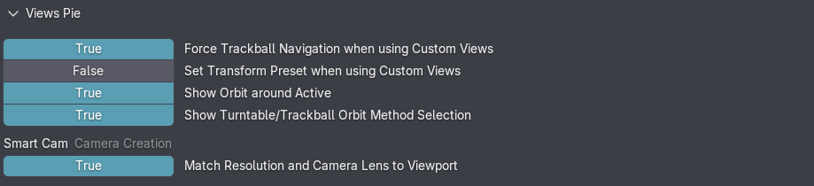
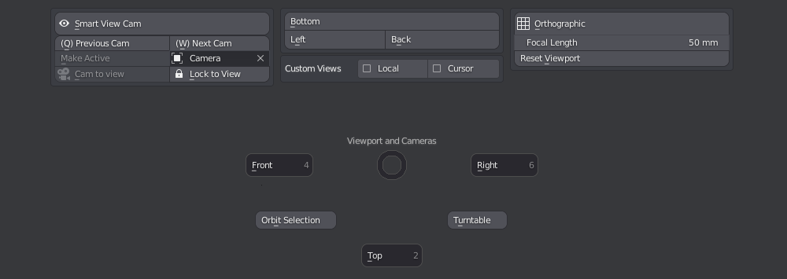
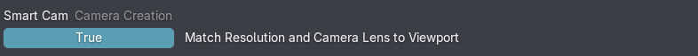

Views Pie
shortcut Page Down
Note
This default shortcut may seem odd, given how frequently the pie is used.
But if you can access Page Down using your mouse, it makes a lot of sense.
The Views Pie is one easily one of the most used menus in MACHIN3tools.
Primarily it facilitates quick switching between views in world space, and simplifies working with cameras
With the Custom Views option, it also allows switching between views in local and cursor space.
Beyond that, it supports changing navigation preferences with the Orbit Selection button and Turntable/Trackball toggle.

Preferences
 Preferences for the Views Pie
Next/Previous Camera
With mutliple cameras present in the scene, and the view set to one of them, you can quickly jump from one camera to the next using the Previous Cam and Next Cam tools.

Quickly switch to the previous or next cameras via Q and W keys
Smart Cam
The Smart Cam tool is used to create cameras from the current view, or to set the view to either the active scene camera, or any selected camera.
Check out the tool tips for details.
When using Smart Cam to create a new camera from the view, by default the view will now be perfectly matched, which is achieved by matching the render resolution ratio to the view's ratio. Also a camera sensor width of 72 is used, while the current viewport's Field of View is brought over to the camera.
 Resolution and Lens Matching can be disabled in the addon preferences
{kind=link}
When in camera view, you can now easily toggle Depth of Field, and set it up by either adjusting the focus distance directly, by picking an existing focus object, or by creating a new focus empty. Also, when you come back to an existing DoF setup at a later point, you can easily select the focus object from the pie, even it it's hidden or not in local view.
A fading HUD has been added to the SmartCam and Next/Prev Cam tools too, for additional hotness user feedback.